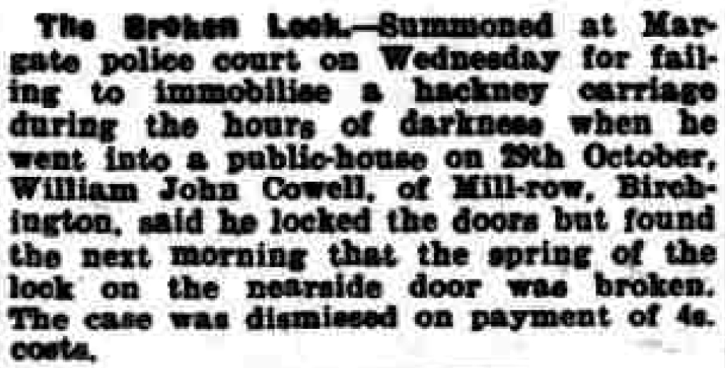
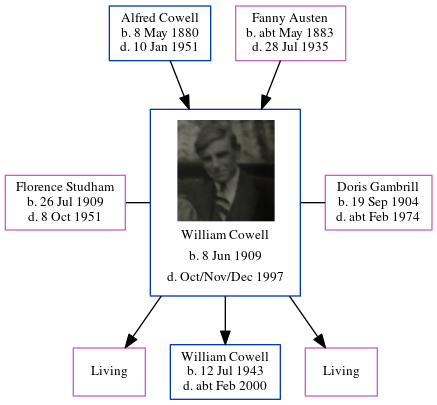

William John Cowell 1909 - 1997
[ Home ] | [ Calendar ] | [ Surnames Index ] | [ Census Index ] | [ Family History ]A coal agricultural merchants truck driver and the child of Alfred Cowell (a transport driver) and Fanny Austen, William Cowell, the first cousin once-removed on the mother's side of Nigel Horne, was born in Upper Stourmouth, Kent, England on Jun 8, 19091,2,3,4,5,6, was baptized in West Stourmouth, Kent, England on Jul 11, 1909 was married twice - to Florence Studham (c. Aug 1931 in Thanet, Kent, England) Doris Gambrill (c. Aug 1953 in Thanet, following the death of Florence May on Oct 8, 1951)7. He had 3 children with Florence Studham: Frances M, William Albert John and Ellen.
During his life, he was living at his birthplace on Apr 2, 191110; at Durlock Farm Cottages, Minster in Thanet on Jun 19, 19212; at 2 Mill Row, Birchington, Kent in 19368 and on Sep 29, 19393; at Mill Row, Birchington, Kent in 1941; and at 47 Park Lane, Birchington, Kent in 19559.
He died in Oct/nov/dec 1997 in Thanet5.
Parents
- Alfred John was born on May 8, 1880
- Fanny was born c. May 1883
Children
- William Albert John was born on Jul 12, 1943
Citations
- 1911 England Census Online publication - Provo, UT, USA: Ancestry.com Operations, Inc., 2011.Original data - Census Returns of England and Wales, 1911. Kew, Surrey, England: The National Archives of the UK (TNA), 1911. Data imaged from the National Archives, London, England.
- 1921 Census Of England & Wales - Findmypast (was age 12 and the son of the head of the household)
- 1939 Register - Findmypast (was the head of the household)
- England & Wales deaths 1837-2007 - Findmypast
- England & Wales, Death Index: 1984-2005 Online publication - Provo, UT, USA: The Generations Network, Inc., 2007.Original data - General Register Office. England and Wales Civil Registration Indexes. London, England: General Register Office. © Crown copyright. Published by permission of the Cont
- England & Wales, FreeBMD Birth Index, 1837-1915 Online publication - Provo, UT, USA: The Generations Network, Inc., 2006.Original data - General Register Office. England and Wales Civil Registration Indexes. London, England: General Register Office. © Crown copyright. Published by permission of the Cont
- England & Wales, Marriage Index: 1916-2005 Online publication - Provo, UT, USA: The Generations Network, Inc., 2009.Original data - General Register Office. England and Wales Civil Registration Indexes. London, England: General Register Office. © Crown copyright. Published by permission of the Cont
- 1936 Isle of Thanet Kelly's Directory
- 1955 Kelly's Thanet Directory
- 1911 Census for England & Wales - Findmypast (was age 1 and the son of the head of the household)
Media
William Cowell
Thanet Advertiser 18 Nov 1941

1936 Isle of Thanet Kelly's Directory

1955 Kelly's Thanet Directory

England & Wales deaths 1837-2007 Transcription - BMD-D-1997-12-81851017
1939 Register Transcription - TNA-R39-1751-1751G-020-35
1911 England, Wales & Scotland Census Transcription - GBC-1911-RG14-04559-0401-3
England & Wales marriages 1837-2008 - BMD/M/1953/3/AZ/000341/005
England & Wales marriages 1837-2008 Transcription - BMD-M-1931-3-AZ-000298-024
Kent Baptisms - GBPRS/CANT/B/96716786
Family Tree
Generated by ged2site. Last updated on Jun 11, 2024